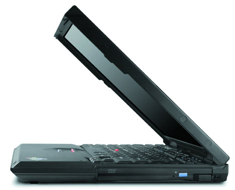

Рынок ноутбуков и количество счастливых обладателей мобильных компьютеров растёт с каждым годом. Вместе с этим растёт и количество производителей, которые пробуют свои силы в производстве таких устройств. Но сколько бы новых имён не появлялось, есть несколько брэндов авторитет которых непререкаем. И самым уважаемым именем на рынке ноутбуков уже много лет является ThinkPad от IBM. Это имя всегда являлось синонимом солидности, надёжности и своего, особого, классического стиля.
Семейство ThinkPad традиционно делится на несколько серий. Я не буду описывать их все, упомяну только основные. Это, прежде всего, серия А, которая включает в себя полнофункциональные трёхшпиндельные ноутбуки с большими экранами. Отрицательными качествами являются внушительные (для ноутбуков) размер и вес. Поэтому А серия позиционируется скорее как замена настольного компьютера, который иногда надо перенести (или перевезти), чем как истинно мобильное решение. Полной противоположностью А серии является Х серия ThinkPad. Эти тонкие и лёгкие одношпиндельные (как правило) машины предназначены, прежде всего, именно для мобильных пользователей, для которых вес и размер имеют большее значение, чем широта возможностей. T серия ноутбуков, один из представителей которой будет рассмотрен в этом обзоре, позиционируется IBM как решение для пользователей, которым важна высокая мобильность в сочетании с большой мощностью и функциональностью. Из всего, что делает IBM в области ноутбуков, Т серия является флагманской, для очень требовательных пользователей, не приемлющих компромиссов. Именно эта серия использовалась IBM для испытания своих ноутбуков в экстремальных условиях. Например, подобные машины побывали на вершине Эвереста и в космосе. И не подвели. Именно Т серию ThinkPad используют такие организации, как NASA, которые могут позволить себе всё что угодно, и где во главу угла ставится надёжность, но требуется и большая мощность. Для решения своих задач Т серия оснащается 14’1-дюймовой матрицей, которая позволяет сочетать достаточно большое рабочее пространство с относительно небольшими размерами. Т серия имеет корпус, усиленный с помощью титанового композита, что обеспечивает ему дополнительную защиту. Вокруг того, что означает понятие "титановый композит", ходит достаточно много легенд, не имеющих ничего общего с реальным положением дел. Нет, это не означает что корпус усилен титановыми пластинами, которыми он переложен как бутерброд. Нет в нём и сеточки из титановой проволки. На самом деле при изготовлении пластика в него просто добавлена очень мелкая титановая пыль. Именно её блеск можно заметить, если внимательно посмотреть на корпус ноутбука на свету. Использование этой пыли позволяет, по утверждению IBM, втрое повысить прочность пластика при сохранении малого веса. Косвенно это подтверждается тем, что нечто подобное используется при изготовлении корпусов болидов Formula 1. Впрочем, это совсем не означает, что ноутбук с таким корпусом стоит сдавать в багаж. Как и любой другой ноутбук. Примеров, подтверждающих эту простую истину, множество, так что если не хотите быть очередным беднягой, с тоской разглядывающим треснутую матрицу, не забывайте об этом в путешествиях.
Этот строгий "квадратный" дизайн поначалу у многих вызывает недоумение, особенно на фоне дизайнерских изысков от других производителей. Что можно сказать – IBM может себе это позволить. Их ноутбукам нет нужды выделяться внешне. Хотя, на фоне разноцветных изделий других фирм, строгие линии и благородный чёрный цвет ThinkPad выделяются сразу. Кроме этого, корпус разрабатывался со всей тщательностью, и запатентован. Согласно этому патенту, корпус ThinkPad обеспечивает наилучшую защиту содержимого этого корпуса, и сам корпус выдерживает самые большие продольные и поперечные нагрузки. Подобных испытаний намеренно я не проводил (по очевидным причинам), но мне известен случай, когда по закрытому T 23, идентичному тому, что я сегодня рассматриваю, "прогулялся" ребёнок, весом в почти 14 килограмм. К сожалению, для матрицы это не прошло бесследно, и на ней появилось двя светлых пятна, диаметром около сантиметра. Больше никаких повреждений не было. Как показали изыскания в интернете, такая проблема (светлые пятна после механических нагрузок на матрицу) иногда встречается, но кроме этих пятен других проблем не возникает, ноутбуки потом живут долго (годами), и болезнь не прогрессирует, даже пиксели в районе пятен не выгорают. Относиться к этому факту можно по-разному, но я видел ноутбуки, на которых матрица трескалась после гораздо меньшего. В общем, это ещё одно подтверждение всем известного факта, что с ноутбуками следует обращаться бережно.